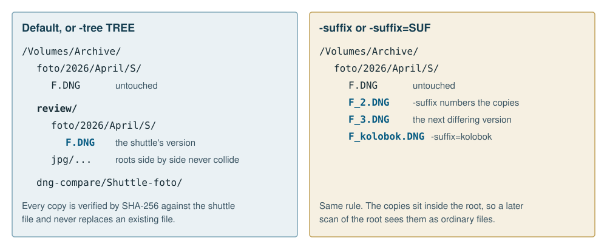

The one command to remember is this one:
unison /Volumes/Shuttle/foto /Volumes/Archive/foto -semdiff -sameview -preservefull -vThe first root is the shuttle and the second is the long-term root. Both must be local. The run has the following shape.
Compare. unison-dngscan -semdiff walks
the shuttle and matches each file on the long-term root. Only the
shuttle is walked. The long-term root is listed, not read, except for
matched files.
Keep. With -preserve, the differences
are kept beside the long-term root, never inside it.
Catch up. Unison copies the files missing on the long-term root, and only those, with creation only: no update, no deletion on either root, and no Unison archive. This is what makes the workflow safe across shuttle cycles. A wiped and refilled shuttle cannot delete or overwrite anything on the long-term root, because this run has no memory of a previous state to reconcile against. A session folder absent on the root is copied as one directory, unless one of its files was already found there by name.
Compare again. If the catch-up copied anything, the comparison runs once more, reusing every earlier result, so the copied files are checked too and the last summary printed is the final one.
Safe to wipe. Every file must be byte-identical on the long-term root, preserved in full, or kept as a conflict copy, and unchanged since it was compared. Anything else is listed by reason and session folder, and the run exits 1.
This run used synthetic files: seven small files under a scratch
directory, built to hit each status. Paths below are shortened to
/D. The first command is the scanner alone, with no
catch-up and nothing kept.
$ unison-dngscan -semdiff /D/photo/foto -sameview -o r.jsonl /D/shuttle
/D/photo/foto:
2 identical
1 metadata-only (1 same view)
1 image-differs
1 differs
1 missing
1 ambiguous
safe to wipe: 2 of 7 files (2 byte-identical, 0 preserved in full, 0 kept as conflict copies)
not safe: 1 missing on every long-term root, in 2026/A
not safe: 1 content differs (-preserve keeps a copy), in 2026/A
not safe: 1 metadata differs (same view; -preservefull keeps it), in 2026/A
not safe: 1 name ambiguous, in 2026/A
not safe: 1 image differs (-preserve keeps a copy), in 2026/A
catch-up for /D/photo/foto: 1 files missing, 1 paths written to r.jsonl.catchupOne of the two identical files had moved to another folder on the
root. It matched by name. The next command is the whole flow with
-preserve, through Unison, which wrote the archive and
copied the conflicts and the one missing file:
$ unison /D/shuttle /D/photo/foto -semdiff -preserve -batch
semdiff: 7 files under /D/shuttle in 0s (3 directories read, 0 from cache)
semdiff: 5 results reused, comparing 2 files with 8 workers
dng-compare archive /D/photo/dng-compare/disk-shuttle: 1 rows added ...
files whose content differs: 0 copied to /D/photo/review/foto, 2 already there, 0 not kept
/D/photo/foto:
3 identical
1 metadata-only
1 image-differs
1 differs
1 ambiguous
safe to wipe: 5 of 7 files (3 byte-identical, 0 preserved in full, 2 kept as conflict copies)
not safe: 1 metadata differs (-preservefull keeps it), in 2026/A
not safe: 1 name ambiguous, in 2026/AThe exit status was 1, correctly, and two reasons remained. The
metadata-only file needs -preservefull. The ambiguous file
needs a person. The output above is the final check. Each run also
prints the exact scanner command it starts, so what happened can be
reproduced directly. Afterwards the disk held the shuttle unchanged,
plus these changes under /D/photo:
foto/2026/A/new.txt the one missing file, created
review/foto/2026/A/note.txt the shuttle's version of a differing file
review/foto/2026/A/pix.jpg the shuttle's version of a differing image
dng-compare/disk-shuttle/ the archiveNothing that was already in foto/ changed.

Next to the long-term root R, for example
/Volumes/Archive/foto:
| Option | Kept in |
|---|---|
-preserve |
R/../dng-compare/SHUTTLE, a
dng-compare archive whose rows are only ever added |
-preservedb DIR |
That archive instead. Implies
-preserve |
-preservefull |
Implies -preserve. The same
archive also holds each metadata-only file as a VCDIFF delta, verified
to rebuild the exact file |
| Conflicts, default | R/../review/NAME/ with the
same relative path, where NAME is R’s own name, so
review/foto/ and review/jpg/ never
collide |
-tree TREE |
R/../TREE/NAME/ instead |
-suffix |
Beside the long-term file as
NAME_2.EXT, NAME_3.EXT, and so on |
-suffix=SUF |
Beside the long-term file as
NAME_SUF.EXT |
SHUTTLE is built from the left root’s last two path
components, so /Volumes/Shuttle/foto gives
Shuttle-foto. -suffix with a value must be
written -suffix=SUF, because Unison would otherwise take a
separate word as a root or profile name.
Conflict copies are verified by SHA-256 against the shuttle file and never replace an existing file. An identical copy from an earlier run is reused.
A shuttle is wiped once it is safe, then filled again, sometimes with new contents at paths the archive already holds. The metadata section records each shuttle file once per version, meaning size and modification time, so a new version’s differences are added beside the old ones, stamped with the run.
-preservefull preserves the new contents too.
dng-archive keeps the earlier record as a version, labelled with the
source’s modification time and the start of its SHA-256
(YYYYMMDDTHHMMSSZ-xxxxxxxxxxxx), and the new record becomes
current, so nothing is overwritten and the refilled shuttle becomes safe
to wipe again. dngc versions ARCHIVE [PATH] lists the
versions of each path, and restore ... --version LABEL
rebuilds an earlier one.
Semantic Unison does this only when the installed
dng-archive keeps versions, which it tells from
restore’s usage line naming --version LABEL.
An older dng-archive would replace the earlier record, so
with one of those such paths are still left out, listed as already
holding another version, and stay “not safe”.
The archive is dng-compare’s, not a format invented for this tool. DNG Compare, The archive describes it in full; this is what a shuttle run needs to know.
dng-compare/Shuttle-foto/
ARCHIVE.json the runs, sources and engines
bytes/ recovery.sqlite3, deltas/, versions/, manifest.jsonl, summary.json
metadata/ batches/*.jsonl.gz, differences.sqlite3: the searchable index
report/ comparison results, when dngc runs the comparison
provenance.json, runs.jsonl, pairs-*.jsonl Semantic Unison's own run records-preservefull keeps: a record per file in
recovery.sqlite3 and a VCDIFF delta against the matching
file on the long-term root. A delta holds only the bytes that differ and
needs that reference to rebuild the file;
--reference-root DIR says where a moved root is now.recovery.sqlite3 at its top and no bytes/, and
its top level is the byte section. A path that already ends in
bytes is the byte section itself. Anything else, including
a new archive, keeps it in bytes/.dngc migrate,
by renames on the same volume, logged in MIGRATION.jsonl
and undone with --undo. Records name their files relative
to the byte section, so nothing inside changes.MISSING PATH and makes the run incomplete, and its earlier
record stays.-preserve and -preservefull run
dng-compare’s OCaml dng-archive; no Python runs. It builds
on stock OCaml 5 and on OxCaml and reads and writes the same files as
dng-compare’s Python and Rust tools. To get a preserved file back,
restore it into a new location:
dngc restore /Volumes/Archive/dng-compare/Shuttle-foto 2026/April/S/F.DNG /tmp/F.DNGThe layout above was agreed between the Unison and Photo sessions in the mailbox, P-23 to P-27 and U-36 to U-40, on 2026-11-08, and both sides test their half:
manifest.jsonl to count files preserved in full. Semantic
Unison’s test moves a real archive between the two layouts and checks
that the summary, a restore and -preservedb ARCHIVE/bytes
give the same result in each, and that later runs never leave an archive
with both.provenance.json, runs.jsonl,
metadata/, and the pairs-*.jsonl lists with
their logs.restore’s usage line keeps --version LABEL,
pinned by a dng-compare test, and Photo announces any change to it in
the mailbox first.dngc migrate, the same values were found under
bytes/, and dngc verify --restore-sample
restored files byte for byte.A root on a disk that diskutil does not report as solid
state, either a spinning disk or an enclosure that does not say, is read
by one stream at a time across all workers, so it never seeks between
files. Solid-state roots are read in parallel. Both files of a pair are
read at the same time.
-hdd PATH marks PATH’s disk as spinning, and
-ssd PATH as solid state, whatever diskutil
reports. Both are recorded on the disk itself, as
disk = hdd or disk = ssd in
MOUNT-POINT/.semantic-unison, so they are given once and
hold for every later run on any Mac. A spinning disk is read by one
stream at a time unless -readers N is given with
-hdd, which records readers = N the same
way.
A progress line every minute gives files and bytes compared, MiB/s,
files/s, the time left and the counts so far. Time left is fitted over
the last 15 minutes with a cost per file and a cost per byte, so it
holds through stretches of small sidecars and large DNGs.
-v adds listing progress, a line for each file that is not
identical, and dng-compare’s preservation output. ^C is
safe: rerun the same command and finished comparisons are reused.
The comparison reads both files of every matched pair, which for two
large libraries is most of both disks. When each tree has a phindex index, that work
has been done already, once, and -semindex uses it:
phindex --db source.sqlite --root /Volumes/Source/foto # reads only what changed
phindex --db longterm.sqlite --root /Volumes/Archive/foto
unison /Volumes/Source/foto /Volumes/Archive/foto -semdiff \
-semindex source.sqlite -semindex longterm.sqliteA row is used only while its file still has the row’s size and modification time. For a pair whose two rows are both current:
| The rows have | Status | Files read |
|---|---|---|
| one SHA-256 | identical |
none |
| the same DNG raw blocks, or the same image data | metadata-only |
none, unless -sameview or
-preserve asks for the metadata |
| nothing in common, or one row is missing or stale | decided as without an index | both |
A file that the path and the name did not find is then looked for by
content: first a file the long-term index lists with the same SHA-256,
then one that shares its raw blocks or image data. That finds a file
that was renamed, or renamed and edited, and settles a name that occurs
twice. Such a match is reported as found index, with the
path it was found at, and the file is not copied again.
This is the way to keep a long-term library as it is while new photographs keep arriving somewhere else. The library is never rewritten: a file already there under any name counts as kept, a file whose metadata differs is reported and left alone, and only a file with no copy at all is added. A file that reached the library by another route, from a second shuttle for instance, is found in its index and not copied twice.
Three things to know:
-semindex every pair is
read.On six real files edited by Lightroom Classic and Photo Mechanic, indexed by phindex itself: one renamed copy was found by SHA-256, one renamed and edited JPEG by its image data, three edited files at their own paths were settled as the same image, one of them with both copies made unreadable, and the one file with no copy was listed for the catch-up.
semdiff-HASH.jsonl, next to its .walk
listing cache and .catchup list. A pair is compared again
only if either file changed. Missing, ambiguous and unavailable files
are always looked at again.-review reruns only on the conflicts
in the previous report, keeping them as -tree or
-suffix says, and scans or synchronizes nothing else.-semdiffroot ROOT adds another
long-term root that counts for “safe to wipe”. Only the second Unison
root is caught up.unison-dngscan -summarize combines
reports from different days and disks. A file is safe if any report
shows it kept and it has not changed since.